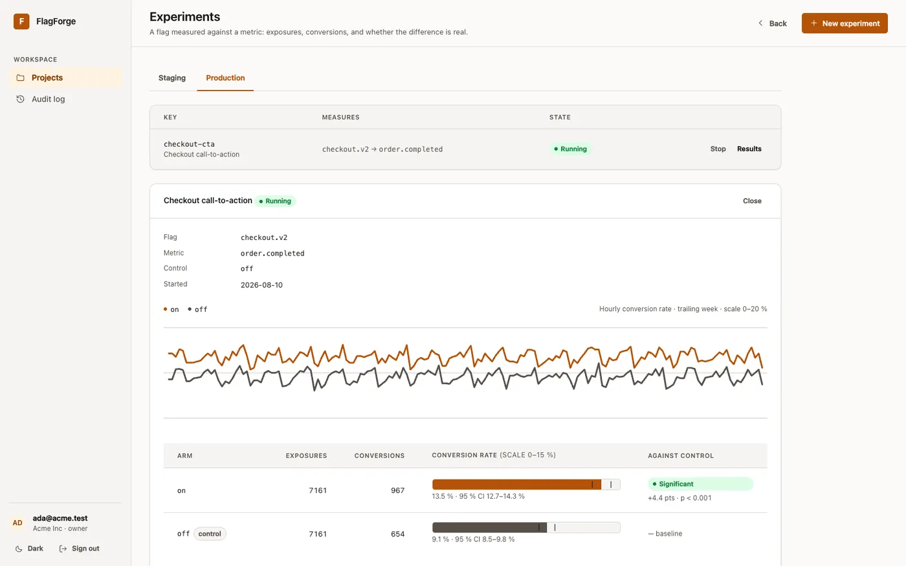
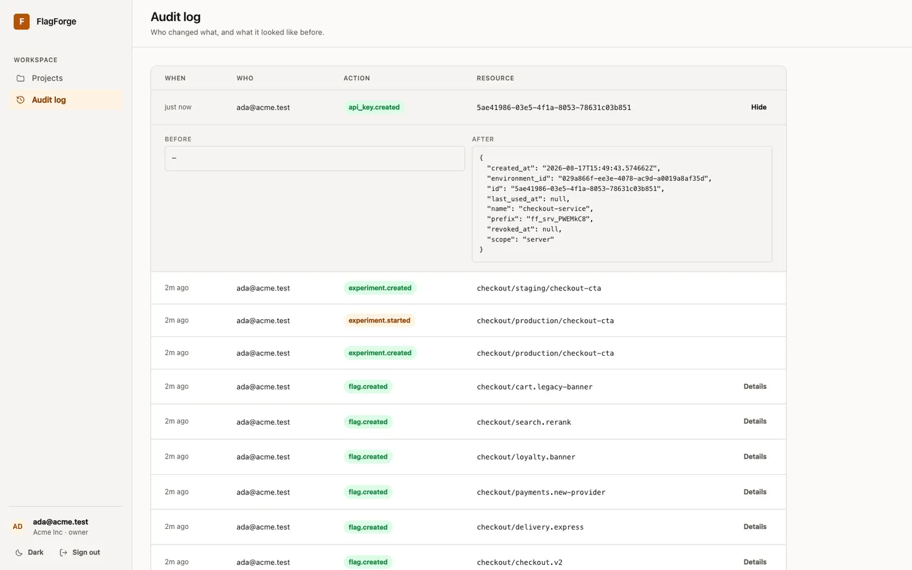

FlagForge: feature flags en Rust, con un solo motor en todas partes
Un servicio multi-tenant de feature flags que construí desde cero en Rust: despliegues segmentados, experimentos A/B, registro de auditoría y un panel compilado a WebAssembly. Responde una pregunta, si este usuario debe recibir esta función, y tiene que responder igual en todos los servidores.

Qué hace
- Reglas de segmentación con diecisiete operadores, incluidos regex, semver y pertenencia a conjuntos.
- Segmentos reutilizables, para que ampliar una audiencia sea un cambio y no doce.
- Despliegues por porcentaje deterministas y estables, sin estado compartido entre servidores.
- Experimentos A/B que terminan en un veredicto: tasas, intervalos de confianza del 95 % y una prueba de significancia contra el control.
- Registro de auditoría con el antes y el después de cada cambio.


Decisiones que vale la pena explicar
- La evaluación nunca toca la base de datos. Un servicio puede consultar flags en cada solicitud, así que cada nodo mantiene una copia inmutable en memoria, con lecturas sin bloqueos.
- PostgreSQL avisa a los nodos cuándo recargar. Los triggers envían una notificación en cada escritura, sin un broker de mensajes. Como esto vive en la base, un cambio hecho por cualquier vía, incluso una migración, actualiza todos los nodos.
- Un flag inválido nunca llega a la base de datos. La API y el panel corren la misma validación, así que el error aparece mientras se escribe, con el mismo mensaje que devolvería la API.
- Dos operadores no pueden sobrescribirse sin saberlo. Cada escritura lleva la versión que espera, PostgreSQL resuelve la carrera en una sola sentencia, y quien pierde recibe un 409 que explica lo ocurrido.
Una decisión que tuve que revertir
Al principio, la copia que recibe el SDK ocultaba el salt de asignación, y una prueba exigía que nunca apareciera. Parecía prudente y estaba mal. Sin el salt, el SDK evalúa bien las reglas, pero asigna los despliegues distinto que el servidor: todas las respuestas parecen razonables y cerca de una cuarta parte son incorrectas, sin nada que lo indique.
Ahora el salt llega a las claves de servidor, y solo a ellas. Las claves de cliente siguen recibiendo solo decisiones, y hay pruebas que fijan ese límite.
Velocidad y pruebas
| Tipo de flag | Tiempo |
|---|---|
| Activo, sin reglas | 40 ns |
| Despliegue por porcentaje | 114 ns |
| 5 reglas, coincide la última | 298 ns |
| 20 reglas, ninguna coincide (peor caso) | 985 ns |
Es un benchmark simple, suficiente para respaldar la cifra y notar una regresión, no un estudio estadístico.
Hay 245 pruebas en cuatro capas: 86 del dominio, incluidas pruebas de propiedades con proptest, 79 de HTTP, 65 de integración, cada una con su propia base migrada, y 15 del SDK. Una de ellas levanta un servidor real y compara 300 usuarios evaluados en local y en remoto.